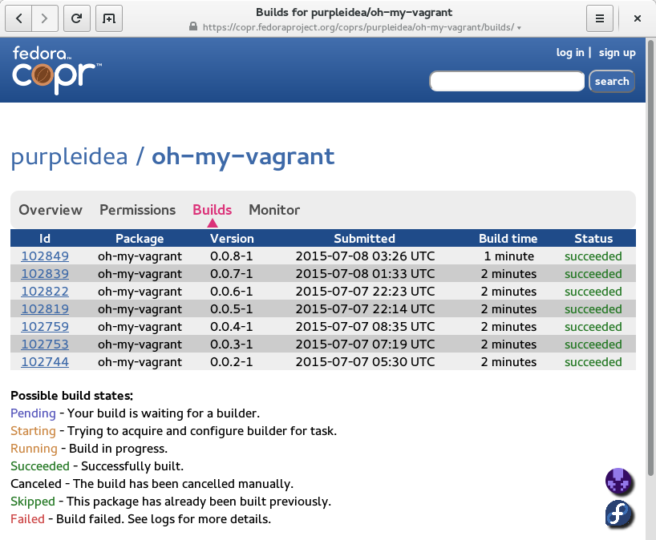

Making Oh-My-Vagrant (OMV) more developer accessible and easy to install (from a distribution package like RPM) has always been a goal, but was previously never a priority. This is all sorted out now. In this article, I’ll explain how “mainstream” mode works, and how the RPM work was done. (I promise this will be somewhat interesting!)
Prerequisites:
If you haven’t read any of the previous articles about Oh-My-Vagrant, I’d recommend you start there. Many of the articles include screencasts, and combined with the examples/ folder, this is probably the best way to learn OMV, because the documentation could use some love.
Installation:
OMV is now easily installable on Fedora 22 via COPR. It probably works on other distros and versions, but I haven’t tested all of those combinations. This is a colossal improvement from when I first posted about this publicly in 2013. There is still one annoying bug that I occasionally hit. Let me know if you can reproduce.
Install from COPR:
james@computer:~$ sudo dnf copr enable purpleidea/oh-my-vagrant
You are about to enable a Copr repository. Please note that this
repository is not part of the main Fedora distribution, and quality
may vary.
The Fedora Project does not exercise any power over the contents of
this repository beyond the rules outlined in the Copr FAQ at
, and
packages are not held to any quality or security level.
Please do not file bug reports about these packages in Fedora
Bugzilla. In case of problems, contact the owner of this repository.
Do you want to continue? [y/N]: y
Repository successfully enabled.
james@computer:~$ sudo dnf install oh-my-vagrant
Last metadata expiration check performed 0:05:08 ago on Tue Jul 7 22:58:45 2015.
Dependencies resolved.
================================================================================
Package Arch Version Repository Size
================================================================================
Installing:
oh-my-vagrant noarch 0.0.7-1 purpleidea-oh-my-vagrant 270 k
vagrant noarch 1.7.2-7.fc22 updates 428 k
vagrant-libvirt noarch 0.0.26-2.fc22 fedora 57 k
Transaction Summary
================================================================================
Install 3 Packages
Total download size: 755 k
Installed size: 2.5 M
Is this ok [y/N]: n
Operation aborted.
james@computer:~$ sudo dnf install -y oh-my-vagrant
Last metadata expiration check performed 0:05:19 ago on Tue Jul 7 22:58:45 2015.
Dependencies resolved.
================================================================================
Package Arch Version Repository Size
================================================================================
Installing:
oh-my-vagrant noarch 0.0.7-1 purpleidea-oh-my-vagrant 270 k
vagrant noarch 1.7.2-7.fc22 updates 428 k
vagrant-libvirt noarch 0.0.26-2.fc22 fedora 57 k
Transaction Summary
================================================================================
Install 3 Packages
Total download size: 755 k
Installed size: 2.5 M
Downloading Packages:
(1/3): vagrant-1.7.2-7.fc22.noarch.rpm 626 kB/s | 428 kB 00:00
(2/3): vagrant-libvirt-0.0.26-2.fc22.noarch.rpm 70 kB/s | 57 kB 00:00
(3/3): oh-my-vagrant-0.0.7-1.noarch.rpm 243 kB/s | 270 kB 00:01
--------------------------------------------------------------------------------
Total 246 kB/s | 755 kB 00:03
Running transaction check
Transaction check succeeded.
Running transaction test
Transaction test succeeded.
Running transaction
Installing : vagrant-1.7.2-7.fc22.noarch 1/3
Installing : vagrant-libvirt-0.0.26-2.fc22.noarch 2/3
Installing : oh-my-vagrant-0.0.7-1.noarch 3/3
Verifying : oh-my-vagrant-0.0.7-1.noarch 1/3
Verifying : vagrant-libvirt-0.0.26-2.fc22.noarch 2/3
Verifying : vagrant-1.7.2-7.fc22.noarch 3/3
Installed:
oh-my-vagrant.noarch 0.0.7-1 vagrant.noarch 1.7.2-7.fc22
vagrant-libvirt.noarch 0.0.26-2.fc22
Complete!
james@computer:~$
If you’d like to avoid typing passwords over and over again when using vagrant, you can add yourself into the vagrant group. 99% of people do this. The downside is that it could allow your user account to get root privileges. Since most developers have a single user environment, it’s not a big issue. This is necessary because vagrant uses the qemu:///system connection instead of qemu:///session. If you can help fix this, please hack on it.
james@computer:~$ groups
james wheel docker
james@computer:~$ sudo usermod -aG vagrant james
# you'll need to logout/login for this change to take effect...
Lastly, there is a user session plugin addition that is required. Installation is automatic the first time you create a new OMV project. Let’s do that and see how it works!
james@computer:~$ mkdir /tmp/omvtest
james@computer:~$ cd !$
cd /tmp/omvtest
james@computer:/tmp/omvtest$ which omv
/usr/bin/omv
james@computer:/tmp/omvtest$ omv init
Oh-My-Vagrant needs to install a modified vagrant-hostmanager plugin.
Is this ok [y/N]: y
Cloning into 'vagrant-hostmanager'...
remote: Counting objects: 801, done.
remote: Total 801 (delta 0), reused 0 (delta 0), pack-reused 801
Receiving objects: 100% (801/801), 132.22 KiB | 0 bytes/s, done.
Resolving deltas: 100% (467/467), done.
Checking connectivity... done.
Branch feat/oh-my-vagrant set up to track remote branch feat/oh-my-vagrant from origin.
Switched to a new branch 'feat/oh-my-vagrant'
sending incremental file list
./
vagrant-hostmanager.rb
vagrant-hostmanager/
vagrant-hostmanager/action.rb
vagrant-hostmanager/command.rb
vagrant-hostmanager/config.rb
vagrant-hostmanager/errors.rb
vagrant-hostmanager/plugin.rb
vagrant-hostmanager/provisioner.rb
vagrant-hostmanager/util.rb
vagrant-hostmanager/version.rb
vagrant-hostmanager/action/
vagrant-hostmanager/action/update_all.rb
vagrant-hostmanager/action/update_guest.rb
vagrant-hostmanager/action/update_host.rb
vagrant-hostmanager/hosts_file/
vagrant-hostmanager/hosts_file/updater.rb
sent 20,560 bytes received 286 bytes 41,692.00 bytes/sec
total size is 19,533 speedup is 0.94
Patched successfully!
Current machine states:
omv1 not created (libvirt)
The Libvirt domain is not created. Run `vagrant up` to create it.
james@computer:/tmp/omvtest$ ls
ansible/ docker/ kubernetes/ omv.yaml puppet/ shell/
james@computer:/tmp/omvtest$
You can see that the plugin installation worked perfectly, and that OMV created a few files and folders.
More usage:
You can hide that generated mess in a subfolder if you prefer:
james@computer:/tmp/omvtest$ mkdir /tmp/omvtest2
james@computer:/tmp/omvtest$ cd !$
cd /tmp/omvtest2
james@computer:/tmp/omvtest2$ omv init mess
Current machine states:
omv1 not created (libvirt)
The Libvirt domain is not created. Run `vagrant up` to create it.
james@computer:/tmp/omvtest2$ ls
mess/ omv.yaml@
james@computer:/tmp/omvtest2$ ls -lAh
total 0
drwxrwxr-x. 7 james 160 Jul 7 23:26 mess/
lrwxrwxrwx. 1 james 13 Jul 7 23:26 omv.yaml -> mess/omv.yaml
drwxrwxr-x. 3 james 60 Jul 7 23:26 .vagrant/
james@computer:/tmp/omvtest2$ tree
.
├── mess
│ ├── ansible
│ │ └── modules
│ ├── docker
│ ├── kubernetes
│ │ ├── applications
│ │ └── templates
│ ├── omv.yaml
│ ├── puppet
│ │ └── modules
│ └── shell
└── omv.yaml -> mess/omv.yaml
10 directories, 2 files
james@computer:/tmp/omvtest2$
As you can see all the mess is wrapped up in a single folder. This could even be named .omv if you prefer, and should all be committed inside of your project. Now that we’re installed, let’s get hacking!
Mainstream mode:
Mainstream mode further hides the ruby/Vagrantfile aspect of a Vagrant project and extends OMV so that you can define your entire project via the omv.yaml file, without the rest of the OMV project cluttering up your development tree. This makes it possible to have your project use OMV by only committing that one yaml file into the project repo.
The main difference is that you now control everything with the new omv command line tool. It’s essentially a smart wrapper around the vagrant command, so any command you used to use vagrant for, you can now substitute in omv. It also saves typing four extra characters!
As it turns out (and by no accident) the omv tool works exactly like the vagrant tool. For example:
james@computer:/tmp/omvtest2$ omv status
Current machine states:
omv1 not created (libvirt)
The Libvirt domain is not created. Run `vagrant up` to create it.
james@computer:/tmp/omvtest2$ omv up
Bringing machine 'omv1' up with 'libvirt' provider...
==> omv1: Box 'centos-7.1' could not be found. Attempting to find and install...
omv1: Box Provider: libvirt
omv1: Box Version: >= 0
==> omv1: Adding box 'centos-7.1' (v0) for provider: libvirt
omv1: Downloading: https://dl.fedoraproject.org/pub/alt/purpleidea/vagrant/centos-7.1/centos-7.1.box
[snip]
james@computer:/tmp/omvtest2$ omv destroy
Unlocking shell provisioning for: omv1...
==> omv1: Domain is not created. Please run `vagrant up` first.
james@computer:/tmp/omvtest2$
BUT THAT’S NOT ALL…
The existing tools you know and love, like vlog, vsftp, vscreen, vcssh, vfwd, vansible, have all been modified to work with OMV mainstream mode as well. The same goes for common aliases such as vs, vp, vup, vdestroy, vrsync, and the useful (but occasionally dangerous) vrm-rf. Have a look at the above links on my blog and the source to see what these do. If it’s not clear enough, let me know!
All of these are now packaged up in the oh-my-vagrant COPR and are installed automatically into /etc/profile.d/oh-my-vagrant.sh for your convenience. Since they’re part of the OMV project, you’ll get updates when new functions or bug fixes are made.
The plumbing:
Mainstream mode is possible because of an idea rbarlow had. He gets full credit for the idea, in particular for teaching me about VAGRANT_CWD which is what makes it all work. I rejected his 6 line prototype, but loved the idea, and since he was busy making juice, I got bored one day and hacked on a full implementation.
james@computer:~/code/oh-my-vagrant$ git diff --stat 853073431d227cbb0ba56aaf4fedd721904de9a8 aa764ae79d69475b87f293c43af4f20fd7d1d000
DOCUMENTATION.md | 18 <span style="color:#00ff00;">+++++++++++++++</span>
bin/omv.sh | 50 <span style="color:#00ff00;">+++++++++++++++++++++++++++++++++++++++++</span>
vagrant/Vagrantfile | 65 <span style="color:#ff0000;"><span style="color:#00ff00;">++++++++++++++++++++++++++++++++++</span>-------------------</span>
3 files changed, 110 insertions(+), 23 deletions(-)
james@computer:~/code/oh-my-vagrant$
It turned out it was a little longer, but I artificially inflated this by including some quick doc patches. What does it actually do differently? It sets VAGRANT_CWD and VAGRANT_DOTFILE_PATH so that the vagrant command looks in a different directory for the Vagrantfile and .vagrant/ directories. That way, all the plumbing is hidden and part of the RPM.
Making the RPM:
The RPM’s happened because stefw made me feel bad about not having them. He was right to do so. In an case, RPM packaging still scares me. I think repetitive work scares me even more. That’s why I automate as much as I can. So after a lot of brain loss, I finally made you an RPM so that you could easily install it. Here’s how it went:
I started by adding the magic so that my Makefile could build an RPM.
This made it so I can easily run make srpm to get a new RPM or SRPM.
Then I added COPR integration, so a make copr automatically kicks off a new COPR build. This was the interesting part. You’ll need a Fedora account for this to work. Once you’re logged in, if you go to https://copr.fedoraproject.org/api you’ll be able to download a snippet to put in your ~/.config/copr file. Lastly, the work happens in copr-build.py where the python copr library does the heavy lifting.
#!/usr/bin/python
# README:
# for initial setup, browse to: https://copr.fedoraproject.org/api/
# and it will have a ~/.config/copr config that you can download.
# happy hacking!
import os
import sys
import copr
COPR = 'oh-my-vagrant'
if len(sys.argv) != 2:
print("Usage: %s <srpm url>" % sys.argv[0])
sys.exit(1)
url = sys.argv[1]
client = copr.CoprClient.create_from_file_config(os.path.expanduser("~/.config/copr"))
result = client.create_new_build(COPR, [url])
if result.output != "ok":
print(result.error)
sys.exit(1)
print(result.message)james@computer:~/code/oh-my-vagrant$ git tag 0.0.8 # set a new tag
james@computer:~/code/oh-my-vagrant$ make copr
Running templater...
Running git archive...
Running git archive submodules...
Running rpmbuild -bs...
Wrote: /home/james/code/oh-my-vagrant/rpmbuild/SRPMS/oh-my-vagrant-0.0.8-1.src.rpm
Running SRPMS sha256sum...
/home/james/code/oh-my-vagrant
Running SRPMS gpg...
You need a passphrase to unlock the secret key for
user: "James Shubin (Third PGP key.) <james@shubin.ca>"
4096-bit RSA key, ID 24090D66, created 2012-05-09
gpg: WARNING: The GNOME keyring manager hijacked the GnuPG agent.
gpg: WARNING: GnuPG will not work properly - please configure that tool to not interfere with the GnuPG system!
Running SRPMS upload...
sending incremental file list
SHA256SUMS
SHA256SUMS.asc
oh-my-vagrant-0.0.8-1.src.rpm
sent 8,583 bytes received 2,184 bytes 4,306.80 bytes/sec
total size is 1,456,741 speedup is 135.30
Build was added to oh-my-vagrant.
james@computer:~/code/oh-my-vagrant$
A few minutes later, the COPR build page should look like this:
|  |
| A screenshot of the Oh-My-Vagrant COPR build page for people who like to look at pretty pictures instead of just terminal output. |
There was a bunch of additional fixing and polishing required to get this as seamless as possible for you. Have a look at the git commits and you’ll get an idea of all the work that was done, and you’ll probably even learn about some new, features I haven’t blogged about yet. It was exhausting!
As a result of all this, you can download fresh builds easily. Visit the COPR page to see how things are cooking:
https://copr.fedoraproject.org/coprs/purpleidea/oh-my-vagrant/
I'll try to keep this pumping out releases regularly. If I lag behind, please holler at me. In any case, please let me know if you appreciate this work. Comment, tweeter, or contact me!Happy Hacking,
James
You can hire James and his team at m9rx corporation.
You can follow James on Mastodon for more frequent updates and other random thoughts.
You can follow James on Twitter for more frequent updates and other random thoughts.
You can support James on GitHub if you'd like to help sustain this kind of content.
You can support James on Patreon if you'd like to help sustain this kind of content.
Your comment has been submitted and will be published if it gets approved.
Click here to see the patch you generated.
{kind=link}
Comments
Nothing yet.
Post a comment